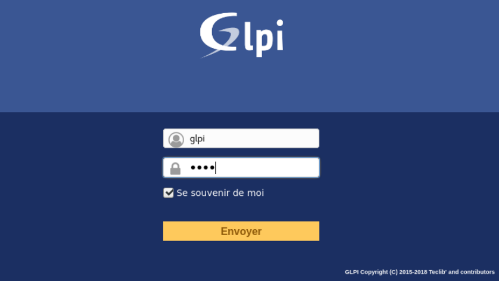

Portfolio de Paul Bammez
Acceuil
Compétences
Stages
Certifications
CV
Veille techno
Répondre aux incidents et aux demandes d’assistance et d’évolution
Traiter des demandes concernant les services réseau et système applicatifs
Nous avons mis en place une GLPI afin de répondre aux incidents des applications et serveurs associés.
